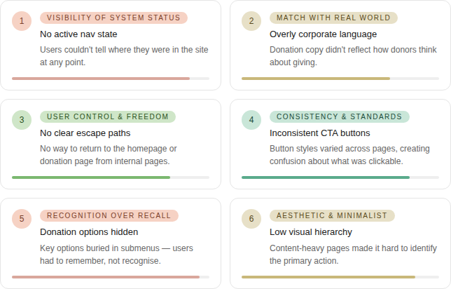
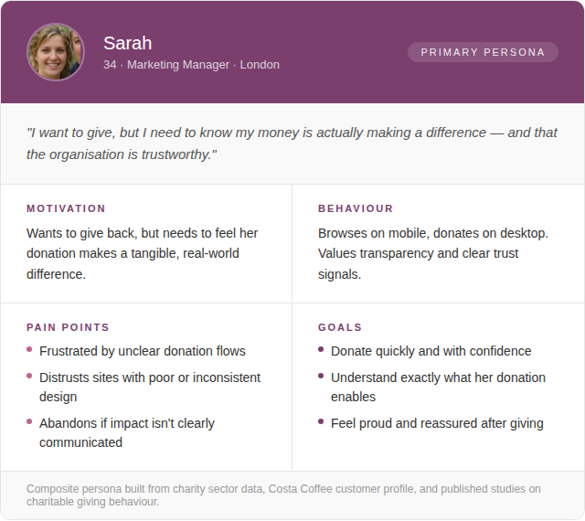

Website Redesign:
Costa Foundation
Redesigning a donation-focused website through competitive benchmarking, heuristic evaluation, and UX laws — without direct access to end users.

- +40% Traffic growth in one quarter
- ↑ Sustained increase in Donate clicks
- 5 UX laws applied to drive design
Overview
The Costa Foundation is the charitable arm of Costa Coffee, focused on building schools and improving access to education in coffee-growing communities. Despite a strong mission, its website underperformed as a donation platform — the giving journey was fragmented, the primary CTA was buried, and the content hierarchy did not reflect the site's core goal.
I led the redesign as the sole UX designer, with the primary objective of increasing donations by reducing friction in the path to the Donate CTA. The constraint: no direct access to end users, which meant every design decision had to be grounded in secondary research and established UX principles.
My role
I owned the end-to-end design process — from scoping the brief and conducting secondary research, to producing wireframes, defining interaction flows, and delivering high-fidelity designs with motion UI. I presented recommendations directly to stakeholders and iterated based on their feedback throughout the project.
The challenge
Without direct access to end users, traditional research methods like interviews or usability testing were not available. I needed to build a rigorous, evidence-based design rationale using secondary sources — one that would hold up to stakeholder scrutiny and justify every recommendation made.
The key questions driving the discovery phase were:
- How do leading charity websites structure their donation flows?
- What usability issues exist in the current Costa Foundation site?
- What UX principles can be applied to increase donation conversion without user testing?
Heuristic evaluation
I began with a structured evaluation of the existing Costa Foundation website using Nielsen's 10 usability heuristics. This allowed me to surface concrete, evidence-backed issues without needing direct user input.
Key findings from the evaluation:

Competitive benchmarking
I benchmarked five major UK charity websites — Cancer Research UK, Oxfam, Save the Children, UNICEF UK, and Comic Relief — analysing donation flow structure, navigation patterns, CTA placement, and content organisation. Key patterns identified:
- All five sites surfaced "Donate" as a primary navigation item — visually distinct from other links, often as a button with a contrasting colour.
- Donation CTAs were placed above the fold on the homepage and repeated at key scroll points throughout the page.
- Static testimonial grids and impact stories consistently outperformed carousels for accessibility and readability.
- Transparent donation allocation ("Your £10 will…") reduced hesitation and increased conversion by making the impact tangible.
- Simplified donation flows with 3 steps or fewer performed significantly better than longer flows.
User persona
Without direct user research, I built a composite persona based on charity sector data, the Costa Coffee customer profile, and published studies on charitable giving behaviour. This grounded design decisions in a realistic user model.

Problem statement
From the heuristic evaluation and benchmarking, three core problems emerged:
- Donors are unable to find the Donate CTA quickly because it is not surfaced in the primary navigation and is buried beneath content that does not prioritise giving.
- Donors feel uncertain about the impact of their donation because the site does not clearly communicate what their contribution enables.
- Donors lose confidence in the site due to visual inconsistency and poor hierarchy, which undermines trust — a critical factor in charitable giving.
How might we…
- Help donors find the Donate CTA within seconds of landing on any page?
- Communicate donation impact in a way that feels personal and concrete?
- Create a visual experience that builds trust and encourages giving?
Userflow
A user flow chart is a tool that maps out paths our users will take when navigating through our product to achieve a certain goal.
This process involves organizing information architecture, where we strategize how to display and structure each piece of information within our product.
UX laws applied
Rather than relying on opinion, every key design decision was mapped to an established UX law or cognitive principle. This gave each recommendation a defensible rationale that could be presented to stakeholders with confidence.
- Fitts's Law: The "Donate" CTA is large, high-contrast, and placed in the primary navigation and hero area — minimising the distance and effort required to reach it.
- Hick's Law: Navigation was simplified to three primary pathways (Donate, Fundraise, Partner), reducing the number of choices and the cognitive load on first-time visitors.
- Jakob's Law: The redesign follows conventions established by leading UK charity sites, ensuring the structure feels familiar and intuitive to donors who give online regularly.
- Von Restorff Effect: The Donate CTA is visually differentiated from all other buttons and links through colour, weight, and size — making it the most memorable and distinct element on the page.
- Aesthetic-Usability Effect: A clean, consistent visual system signals professionalism and trustworthiness — which research shows directly increases willingness to donate.
Key design decisions
- Replaced the hamburger menu with a full display navigation on desktop, exposing all primary pathways at a glance and adding "Donate" as a visually distinct CTA button within the nav bar.
- Added active state highlighting to navigation items, so users always know where they are in the site — addressing the heuristic violation identified in the evaluation.
- Redesigned the hero section to lead with the mission and a prominent Donate CTA above the fold, reducing the steps required to give from any entry point.
- Restructured the "How We Make a Difference" section into card-based donation tiers (e.g. "£10 provides a child with books for a term"), making impact concrete and reducing donor hesitation.
- Replaced the testimonial carousel with a static, accessible grid layout, improving readability and ensuring content is available to all users regardless of assistive technology.
- Applied a consistent button system across all pages, eliminating the visual inconsistencies surfaced in the heuristic evaluation.
Homepage wireframe
The wireframe below shows the proposed homepage layout — simplified navigation with a prominent Donate button, a clear mission-led hero, and a restructured content hierarchy that prioritises the giving journey.

Redesigned homepage
The final design was delivered as a complete set of high-fidelity pages, covering the homepage, donation flow, How We Make a Difference, and the About page — along with interaction flows and motion UI. Due to client confidentiality, only the homepage is shown here.

Outcomes & impact
The redesigned site launched with measurable improvements in both traffic and donation engagement, validating the evidence-based approach taken throughout the project.
- Traffic growth +40% in one quarter post-launch
- Donate clicks ↑ Sustained increase post-launch
Structural improvements delivered
- Navigation moved from a hidden hamburger menu to a fully visible desktop nav, with Donate surfaced as a primary CTA.
- Steps to reach the Donate CTA reduced from 4+ to a single click from any page.
- Donation flow redesigned for clarity, with transparent impact messaging at each tier.
- Fully responsive design ensuring a consistent experience across mobile, tablet, and desktop.
- Visual consistency restored across all pages, reinforcing trust and brand credibility.
Next steps
- Conduct moderated usability testing with real donors to validate design decisions with primary research.
- A/B test the Donate CTA placement and copy to optimise conversion rate.
- Track scroll depth and click heatmaps post-launch to identify further friction points in the donation journey.
- Explore personalised donation tiers based on returning visitor behaviour.